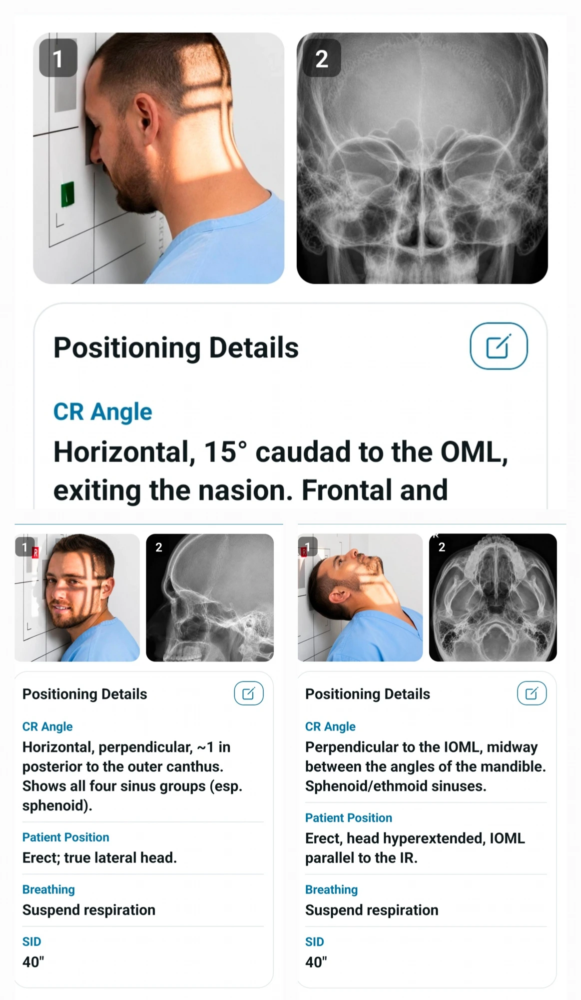
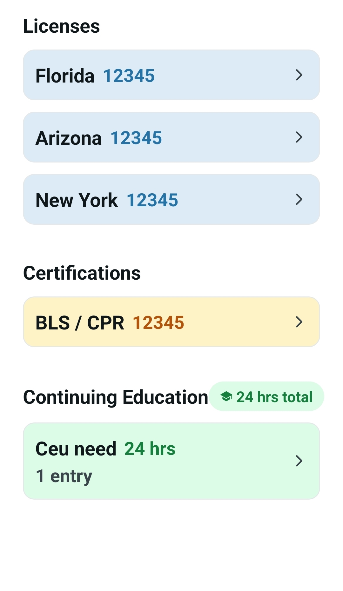

X-RayVault
X-RayVault
X-RayVault
X-RayVault
Home / Features
The reference, guides and trackers that make X-Ray Vault feel like your whole department — slipped into a coat pocket.
The heart of X-Ray Vault: a fast reference for every projection — patient positioning, central ray, SID and suggested kVp/mAs — with image-critique pointers when a film isn't quite right.

Step-by-step guidance for the trickier cases — cine setup, roadmapping, subtraction, angioplasty and arthrograms in the OR; barium swallow, BE and double-contrast studies in fluoro.
Keep your department's protocols and its phone directory in one place — standardised, searchable and always with you, so the right answer and the right number are seconds away.
Stay ahead of renewals. Track state licenses, professional certifications like BLS/CPR, and continuing-education hours — with dates you can actually see coming.

Moving to a new phone or just backing up? Share your data as a file, save it to the device, or hand it off via QR code — then import on the other side and pick up exactly where you left off.

Browse the interface, then get the app on your device.